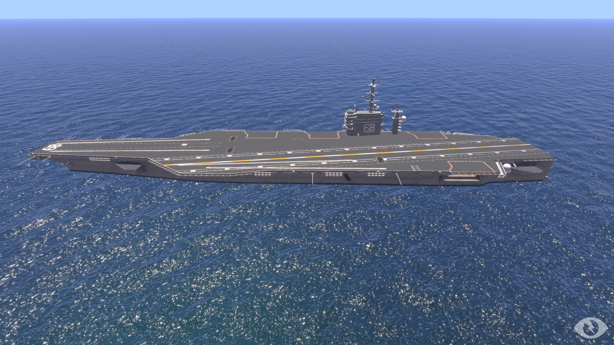
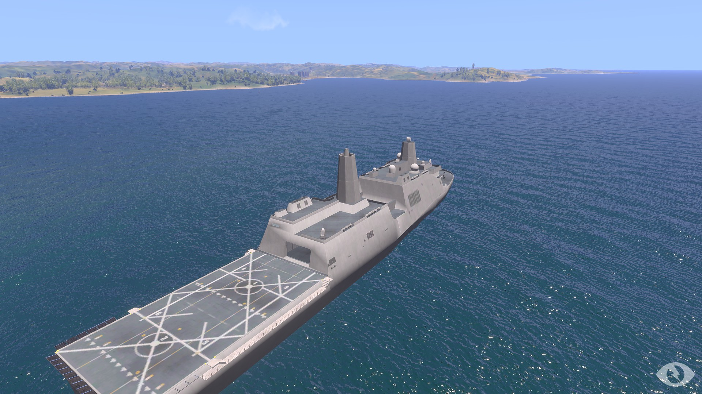
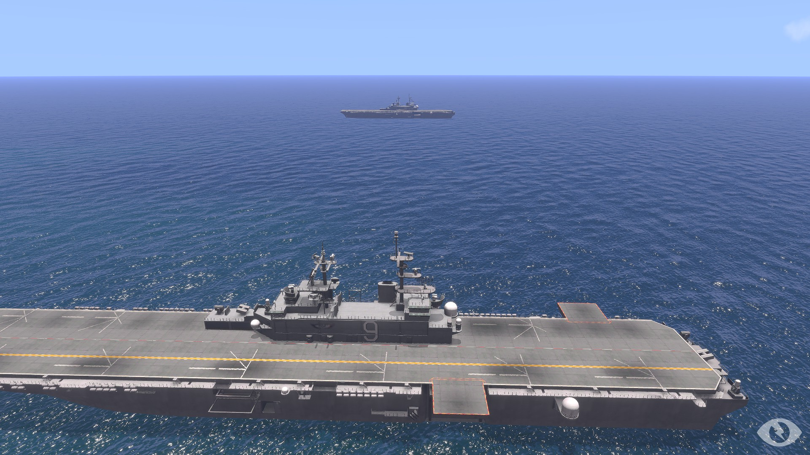

The USS Nimitz is a naval carrier supplied by the US Navy for the purpose of housing and basing the 15th MEU(RU) F/A-18D detachment. The Nimitz deck is made up of a parking area, landing strip with cable braking system and two deck launchers for simultaneous launch of aircraft. While the Marine Corps utilizes carriers for their missions, all naval function of the carrier is completely run by the Navy.
The USS Everett is a naval LPD or Landing Platform/Dock. It consists of a water level dock housed inside the ship and a landing pad on top. The USS Everett was named after the city of Everett, Washington by it’s creator GySgt Phillips. The LPD is utilized to house our infantry personnel in preparation for a mission and allows for the use of aircraft transportation and/or naval transportation through the use of CRRCs or AAVs. All LPDs are operated and maintained by the navy and used by the Marine Corps for transportation of forces near the shore for ship to shore actions.
The USS Matthew Barton is a naval LHD or Landing Helicopter Dock. The ship was named in memoriam of the 15th’s late Major Matthew Barton, who made significant contributions to the unit in general and helped to make the Air Combat Element what it is today. It's primary purpose is to act as a helicopter base of operations. The 15th MEU(RU) uses the USS Matthew Barton in order to house, transport and launch the CH-53E Detachment and F-35 Detachment. While the Marine Corps utilizes LHDs for their missions, all naval function of the LHD is completely run by the Navy.
The USS Fallujah is a naval LHD or Landing Helicopter Dock. This ship received it’s name in memory of the Battle of Fallujah in a naming contest years ago. It's primary purpose is to act as a helicopter base of operations. The 15th MEU(RU) uses the USS Fallujah in order to house, transport and launch the UH-1Y/AH-1Z Detachment and MV-22B Detachment. All LHDs are operated and maintained by the navy and used by the Marine Corps for transportation of forces near the shore for ship to shore actions.